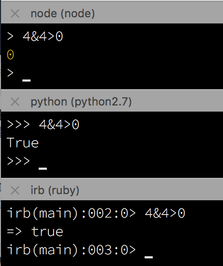

Hello World
CodeTengu Weekly 碼天狗週刊
CodeTengu Weekly 會在 GMT+8 時區的每個禮拜一早上 10:00 出刊，每一期會從目前的 curator 名單中選出三位來負責當期的內容，每一位 curator 各自負責不同的領域，如果你在這一期沒有看到自已感興趣的東西，說不定下一期就會有了。
你也可以瀏覽一下前幾期的內容，有價值的東西是不會過時的。
以下是目前的 curator 陣容：
- @vinta - I failed the Turing Test - 喜歡科幻小說，最近在讀「羊毛記」
- @saiday - Imnotyourson - 捷運飲食推廣委員會
- @tzangms - Oceanic / 人生海海 - 衝動型購物
- @fukuball - ImFukuball - 最近好窮，有案子可以接嗎？
- @wancw - 五月病發作、兼職人力仲介中
- @mingderwang
- @kako0507 - 熱愛嘗試新事物的前端工程師
- @chiahsien - Nelson
- @hiroshiyui - 非典型司書
- @uranusjr - Smaller Things - 聽說這是技術週刊，可是我不愛談技術怎麼辦
- @kkdai - 態度萬歲 - 喜歡 Golang 的略懂工程師
大家也可以 follow 一下 CodeTengu 的 Facebook、Twitter 或 GitHub，有很多 Weekly 看不到的內容。有任何建議或疑問也可以來 Gitter 聊一聊，歡迎亂入 👺
 @vinta
@vinta
Useful Python tips!
作者每天會在這個 GitHub repo 更新一則關於 Python 的短文（所以其實你可以 watch 這個 repo），而且是用 IPython notebook！主題從 metaclass、Enum（Python 3.4 以後才有）、context manager、generator 到 threading，值得一讀。
AWS Cloud Design Patterns
這個 wiki 網站滿有趣的，上面列舉了很多 Amazon Web Service 的 "Cloud Design Pattern"，不過白話一點的說法其實就是 AWS 各種服務的 use case 和它們之間可以怎麼搭配，用來解決哪些問題。
AWS DynamoDB notes
上禮拜心血來潮突然想玩一下 AWS Lambda 和 DynamoDB，也順便自動化一些 CodeTengu 的例行事項，然後這篇文章和延伸閱讀的那一篇就是我在過程中做的筆記，雖然有點雜亂，不過應該還是對大家有點幫助的。但是其實 AWS 的官方文件寫得很完整，就是內容實在多了點，看完都過了八年馬英九都下台了。
AWS Lambda 毫無懸念地很容易上手，不過我沒有用最近很熱門的 serverless（他包了太多東西了，我的需求沒那麼複雜），而是用了 @tj 大神寫的 apex，簡單好用，不愧是出自名家之手啊～
除此之外反倒是花了不少時間研究 DynamoDB 的 index 該怎麼下，有興趣的人可以看一下 Design Patterns using Amazon DynamoDB（也有影片），豁然開朗撥雲見日吶！
延伸閱讀：
The Elements of Good Commit Messages
這個簡報在講好的 commit messages 會有哪些要素，最棒的是他舉的例子都是從各大 open source project 挖來的 "Real World Examples"。
作者提到的好幾項都挺不錯的，其中我覺得最重要的可能就是「在 commit message 中提供 context（上下文）」，例如：
- error message（或者至少是 exception class）
- 這個 bug 會在什麼情況下發生
- 為什麼選擇這個做法（這個方式可能犧牲了什麼？）
- 你還嘗試或考慮了哪些做法
不過如果什麼都寫上去，正常人也是受不了，所以另外很重要的一點是要在 commit message 裡標記 issue number（票號，例如 Fixes #42），因為當初在專案管理系統裡可能就有很多關於這個 issue 的討論或是更詳細的前因後果，這些對 code review 和將來的 debug 可都是很重要的資訊啊。不過，程式碼背後的 why 和簡報最後提到的 reference，我覺得除了寫在 commit message 裡之外，其實更適合寫在註解裡。
延伸閱讀：
- How to Write a Git Commit Message 在 Issue 2 分享過
 @kako0507
@kako0507
Higher Order Components: Theory and Practice
High-order component 概念來自 funcitonal programming 的 high-order function ，是將一個 function 轉成另一個 function 的運算，同樣的 High-order component 能將一個 component 轉換為另一個 component ，可以減少重複的 code ，方便 compose ，在使用 React 實可用來取代 Mixin 的效果。
CSS coding techniques
這篇文章大略的講解了容易讓開發者混淆的幾個部分，以及對撰寫 CSS 的建議：
- CSS specification (權重)
- 透過對權重的了解可以避免寫出的 CSS 被其他 Selector 所覆蓋，也因此可減少對 !important 的依賴
- 長度單位
- em and rem
- vw and vh
- 使用 flexbox 簡單拉出 layout
- CSS preprocessors
- Do not let nesting generate CSS rules you wouldn’t type yourself.
- Include vs extend
What's new in Node v6?
Node.js 改版速度飛快，日前又發佈了 v6 版本，號稱速度較目前的 LTS 版本 (v4) 提升四倍！且支援大部分 (93 %) 重要的ES6 新特性，在十月也會變為 LTS 版本，屆時就可以將 Product 換上了。
Webpack & The Hot Module Replacement
Webpack HMR (Hot Module Replacement) 讓瀏覽器可以在程式碼被變動時自動更新當前畫面狀態，在開發時非常方便。本篇文章介紹 HMR 的運作原理和流程。
Front-End Performance: The Dark Side
影片探討 performance 有時候會造成安全性問題，影片一開始會透過 string compare performance 來介紹 timing attack ，以及介紹透過 timing attack 來達成的攻擊。
 @wancw
@wancw
簡單設計 4 準則（Kent Beck's 4 Rules of Simple Design）
過度設計（over design）一直是個大問題，但是怎樣才叫簡單？
極致編程（XP）的大師 Kent Beck 提出一套準則：
- 通過所有測試（Passes the tests）
- 清楚地表達意圖（Reveals intention）→ 易讀
- 沒有重複（No duplication）
- 最少元件（Fewest elements）
當發生衝突的時候，以前面的準則為優先。
本文是 Martin Fowler 對這份準則的詮釋與討論。
另外還可以參考 DZone 上面的 The 4 rules of simple design 和微信上 WXCOP 无限靠谱的简单设计原则 。

一道常被人轻视的前端 JS 面试题
簡單的一道題目，卻蘊含了 JavaScript 無數的坑，值得一讀。至少提醒自己不要寫出模稜兩可或是不確定語意的程式碼。
像我前兩天就踩到 JavaScript 的運算子優先順序的雷 —— < 竟然優先於 & ？！只能說我實在太天真了啊～ 還好不是用在 production 上的程式碼。
[中文導讀] Facebook 的時間序列資料庫 - Gorilla
這是碼天狗策展群之一 @kkdai 讀完 Facebook 的時間序列資料庫 Gorilla 論文後的心得摘要。
不但每週有專案產出、還有時間閱讀複雜的論文，kkdai 實在很猛啊！大家可以參考一下他的時間管理心得
如果各位對於讀 CS 領域的論文有興趣的話，也可以參考 Papers We Love 這個社群。
如何有禮貌地拒絕會議邀請（Polite Ways to Decline a Meeting Invitation）
碼農最討厭的事情之一就是無止境的莫名其妙會議來干擾自己的生產力。 這篇文章給了是否參加會議的判準，並提供一些建議的回應方式。
首先是評估你是否該參加該會議：
- 評估會議的價值：事前資訊是否足夠？是否重要、有意義？
- 你是否是正確人選：權責是否相符？你的意見可否發揮作用？
- 衡量自己手上工作的優先順序：手上是否有其他更重要的事情？
然後作出適當的回應：
- 阻止你覺得根本是無用的會議
- 推薦更適合的人選
- 在會議前提出你的看法與建議 或是 只出席部分會議
習慣這套準則、清楚說明拒絕原因，讓同僚習慣這樣的做法，一起打造更有效率的工作環境吧！
Random Cool Stuff
Reverse Engineering A Mysterious UDP Stream in My Hotel
作者無意間在旅館發現神秘的 UDP 廣播封包，決定追根究底找出它們的來源與目的……竟然是旅館電梯的音樂！
解謎過程很有趣，值得一看。
由 @wancw 分享。